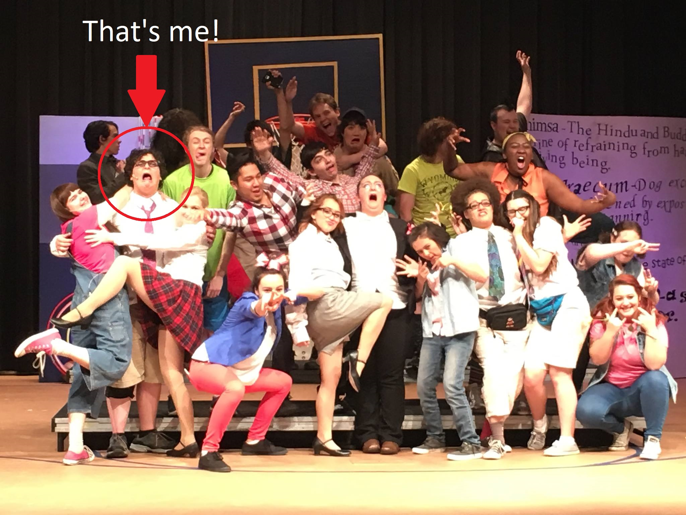
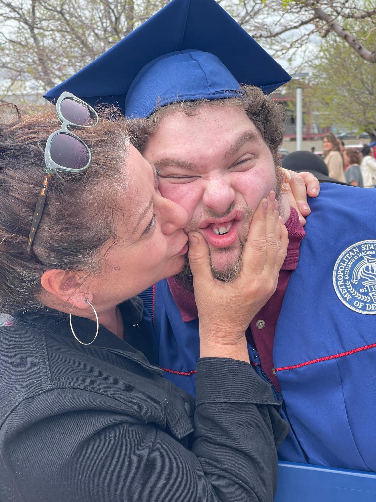

<!DOCTYPE html>
<html lang="en">
<head>
	<meta charset="UTF-8">
	<meta name="viewport" content="width=device-width, initial-scale=1.0">
	<title>Wolfy Fiorini Portfolio</title>
	<link rel="stylesheet" type="text/css" href="style/style.css" />
	<link rel="stylesheet" type="text/css" href="style/home.css" />
	<link rel="stylesheet" href="https://cdnjs.cloudflare.com/ajax/libs/font-awesome/4.7.0/css/font-awesome.min.css">
	<script type = "text/javascript" src="js/scripts.js"></script>
</head>
</html>
<body>
	<div>
		
		<!-- Home -->
		<section id="home">
			
			<div class="menu-container sticky" >
				<div id="menu" class="menu-toggle" onclick="menuSlide()">
				  <div class="bar"></div>
				  <div class="bar"></div>
				  <div class="bar"></div>
				</div>
				<nav id="links" class="nav-menu">
				  <ul>
					<li><a href="index.html">Home</a></li>
					<li><a href="portfolio.html">Portfolio</a></li>
					<li><a href="contact.html">Contact</a></li>
				  </ul>
				</nav>
			</div>

			<div class="home-container">
				<!-- Name, bio, social -->

			  <div class="hero-content">
				<h1>Hi, I'm <br> <span style="font-weight: 800; color:rgb(0, 255, 119)">Wolfy Fiorini</span></h1>
				<h2 id="bio"></h2>
				<a href="assets/WolfyFiorini_FastTrackResume_Draft2.pdf" target="_blank" class="resume-link"><button>Download Resume</button></a>
				<div>
					<a href="https://www.linkedin.com/in/jon-fiorini/" target="_blank" class="icon">
						<span class="fa fa-linkedin"></span>
					</a>
					<a href="https://github.com/Wolfy319" target="_blank" class="icon">
						<span class="fa fa-github"></span>
					</a>
				</div>

			  </div>
			  <!-- Profile picture -->
			  <div class="mobile-avatar-container">
				
			</div>
			  <div class="avatar-container">
				
			  </div>
			</div>
			<div class="custom-shape-divider-bottom-1707896441">
				<svg data-name="Layer 1" xmlns="http://www.w3.org/2000/svg" viewBox="0 0 1200 120" preserveAspectRatio="none">
					<path d="M892.25 114.72L0 0 0 120 1200 120 1200 0 892.25 114.72z" class="shape-fill"></path>
				</svg>
			</div>
		</section>

		<!--About-->
		<section id="about-section">
			<div class="custom-shape-divider-top-1707896522">
				<svg data-name="Layer 1" xmlns="http://www.w3.org/2000/svg" viewBox="0 0 1200 120" preserveAspectRatio="none">
					<path d="M892.25 114.72L0 0 0 120 1200 120 1200 0 892.25 114.72z" class="shape-fill"></path>
				</svg>
			</div>
			<div class="about-me">
			
				<h1 id="about-me-header">About Me</h2>
				<div class="about-container">
				  <div class="about-me-content">
					<div class="about-me-text">
					  <p>My name is Wolfy Fiorini, and I was born and raised in <span class="emphasized">Denver, Colorado</span>. I grew up with two parents who loved science, and have loved computers since I was a kid.</p>
						<br>	
					  <p>In high school, I was in all the <span class="emphasized">school plays</span> and performed as the school <span class="emphasized">mascot</span>. I also <span class="emphasized">mentored other students</span>, and took a couple classes on <span class="emphasized">web development</span> which sparked my interest in computer science.</p>
					</div>
					<div class="about-me-image">
					  
					</div>
				  </div>
				</div>
				<div id="reversed" class="about-container">
					<div class="about-me-content" style="flex-direction: row-reverse;">
					  <div class="about-me-text">
						<p>When trying to figure out what to do for <span class="emphasized">college</span>, I saw my stepdad (a software developer) playing video games 4 days a week.</p>
						<br>
						<p>As a teen, that seemed like a dream career. Now I know how much <span class="emphasized">hard work</span> goes into this field, but luckily <span class="emphasized">I found my own passion</span> for it.</p>
						<br>
						<p>I went to college at <span class="emphasized">Metropolitan State University of Denver</span> (Go Roadrunners!) for my B.S. in Computer Science.</p>
						</div>
					  <div class="about-me-image" >
						
					  </div>
					</div>
				  </div>
				  <div class="about-container">
					<div class="about-me-content">
					  <div class="about-me-text">
						<p>While in school, I learned <span class="emphasized">Java, JavaScript, Python, full stack development</span>, among other subjects. In my second year I took a class on <span class="emphasized">computer vision</span>, where I found my passion for software. </p>
						<br> 
						<p>In my last 2 years of college, I was a <span class="emphasized">CS teaching assistant</span> and loved helping students learn.</p>
						<br>
						<p>I <span class="emphasized">graduated MSU Denver in May 2023 with honors</span>, and am now training to be a full time Software Developer.</p>
					  </div>
					  <div class="about-me-image" onclick="switchImg()">
						
						
					  </div>
					</div>
				  </div>
			</div>

		</section>


	</div>
	
	<script>
		window.onload = function(){
			let bio = ""
			let avatarUrl = ""
			fetch("https://api.github.com/users/Wolfy319")
			.then(r => r.json()) 
			.then(response => {bio = response.bio; avatarUrl = response.avatar_url})
			.then(() => {
				document.getElementById('bio').innerHTML = bio;
				document.getElementById('avatar').src = avatarUrl;
				document.getElementById('mobile-avatar').src = avatarUrl;

			})
		
		};
	</script>
</body>
